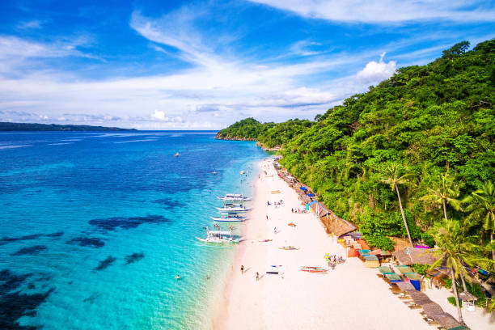
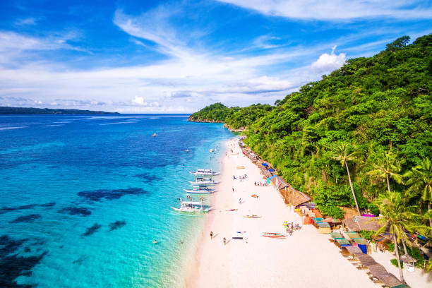

Discover The Beautiful World
Boracay
Boracay, one of the top Islands in the Philippines, is popular for its beaches and blessed with a long stretch of powdery white sand, crystal clear and azure waters, and a stunning sunset. Boracay is the most iconic island in the Philipines and has won multiple awards in previous years.

 


Palawan
Palawan boasts dramatic limestone cliffs, pristine beaches, and emerald lagoons in El Nido and Coron. It is a haven for divers and explorers, featuring shipwreck sites, coral reefs, and stunning island-hopping tours.


Chocolate Hills
The Chocolate Hills are a unique natural formation of over 1,200 grass-covered mounds that turn chocolate-brown in the dry season. This iconic landscape is surrounded by other attractions like the Tarsier Sanctuary and Loboc River.

Banaue Rice Terraces
Carved by indigenous tribes over 2,000 years ago, the Banaue Rice Terraces are a testament to the ingenuity of ancient Filipino agricultural engineering. Visitors can marvel at the lush terraces and immerse themselves in Ifugao culture.

Cebu
Cebu is a mix of rich history, cultural landmarks, and natural wonders, making it a must-visit destination. Popular attractions include Magellan’s Cross, Kawasan Falls for canyoneering, and Oslob for swimming with whale sharks.


Siargao Island
Siargao is a surfer's paradise, famous for its world-class waves at Cloud 9 and pristine beaches. Beyond surfing, it offers serene lagoons, enchanting rock pools, and vibrant local culture.

Vigan
Vigan is a UNESCO World Heritage Site known for its cobblestone streets, Spanish-era houses, and charming horse-drawn carriages. It offers a glimpse into the Philippines' colonial history with attractions like Calle Crisologo and Syquia Mansion.